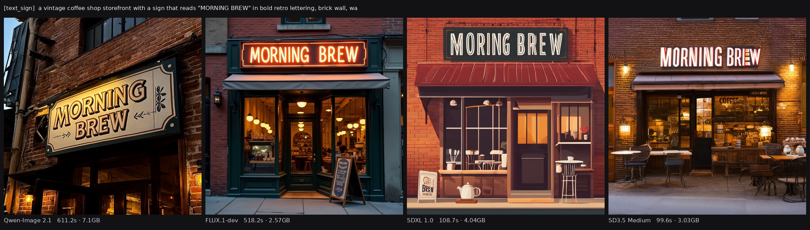
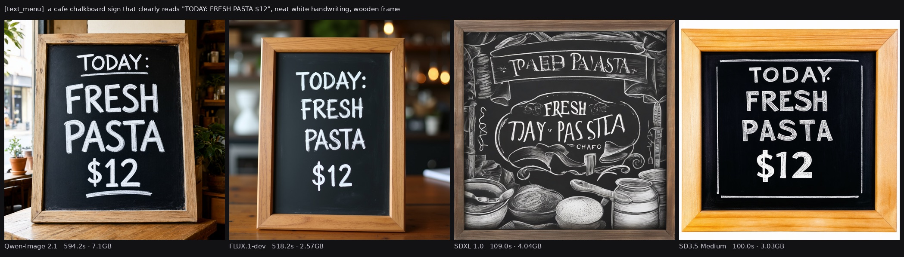
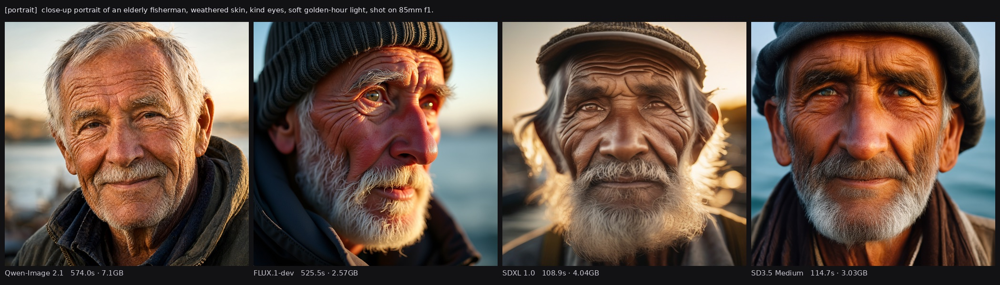
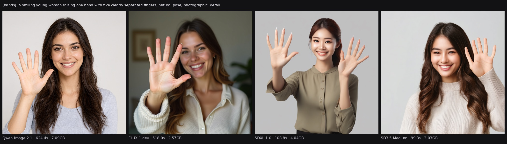
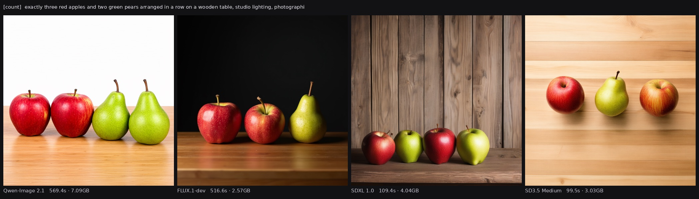
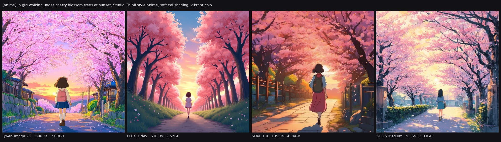
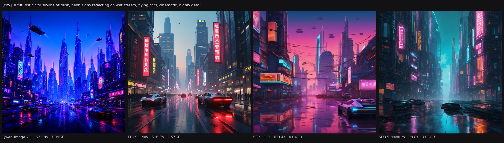
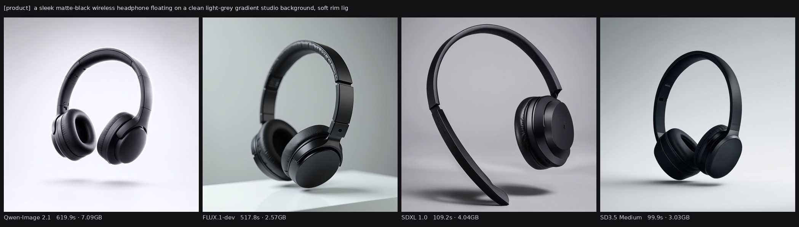
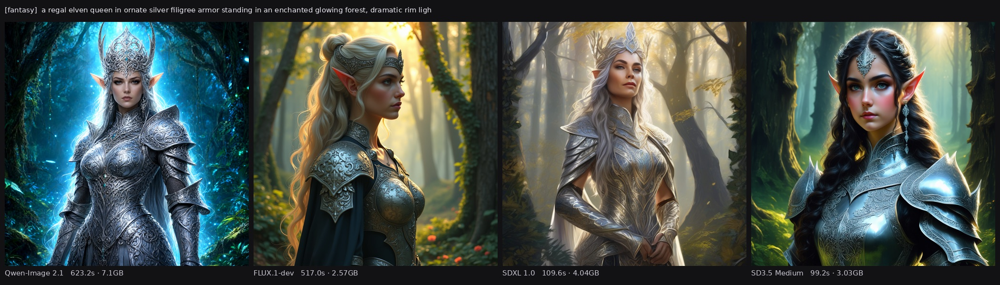
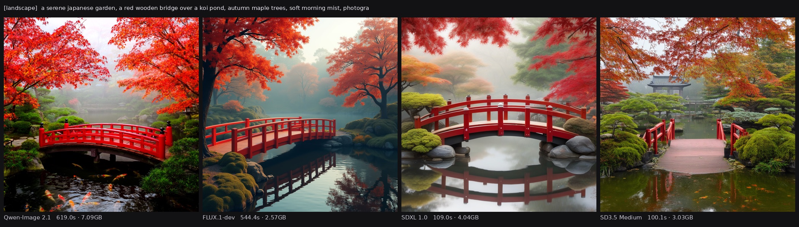

<!doctype html>
<html lang="en">
<head>
<meta charset="utf-8">
<meta name="viewport" content="width=device-width,initial-scale=1">
<title>51 · The Benchmark — Qwen-Image 2.1 vs FLUX, SDXL, SD3.5 on 8 GB</title>
<meta name="description" content="Forty renders, four models, one 8 GB card. Qwen-Image 2.1 measured head-to-head against FLUX.1-dev, SDXL 1.0 and SD3.5 Medium on the same prompt suite — text rendering, photorealism, hands, counting, style — with wall-time and peak VRAM for each.">
<link rel="stylesheet" href="assets/style.css">
<link rel="stylesheet" href="assets/katex.min.css">
<style>
  .bench{width:100%;border-radius:12px;border:1px solid #243049;margin:14px 0 6px;display:block}
  .bcap{font-size:12.5px;color:#7c8aa0;margin:0 0 20px}
  .bcap b{color:#9fb6e8}
</style>
</head>
<body>
<script type="text/markdown" id="md">
<span class="kicker">Chapter 51 · Measured, four ways</span>

# The Benchmark

<p class="lede">We put <b>Qwen-Image 2.1</b> — the engine from chapter 49 — head-to-head against the three open models people actually compare it to: <b>FLUX.1-dev</b>, <b>SDXL 1.0</b>, and <b>SD3.5 Medium</b>. Same ten prompts, same 1024&nbsp;×&nbsp;1024, same 30 steps, all four streamed through a single 8&nbsp;GB card the same way. Forty renders, each one timed and VRAM-measured. This is what came out.</p>

<div class="callout truth"><span class="t">The one-line result</span>
<p>Three of the four render <b>text</b> flawlessly; <b>SDXL cannot</b> — that is the biggest single gap and it is architectural. On photoreal portraits all four are excellent. Qwen-Image 2.1 is top-tier on everything that decides quality (text, hands, prompt adherence); it is simply the slowest here at bf16. Nobody can count.</p></div>

## How it was run

Mirroring the audio project's single-GPU discipline (chapter 48's sibling): one model is loaded onto the card, renders the whole suite, is **unloaded**, and the card is freed before the next model loads. Never two models on 8 GB at once.

<div class="callout spec"><span class="t">Method — so the numbers mean something</span>
<p>Ten fixed prompts across six skills (portrait, landscape, <b>two</b> text-in-image, counting, anime, product, hands, cityscape, fantasy). Fixed seeds per prompt for reproducibility (seeds are <em>not</em> comparable across architectures, only within one). 1024&nbsp;×&nbsp;1024, 30 steps, <code>sequential_cpu_offload</code> for all four so each genuinely fits 8&nbsp;GB — apples to apples. Each render records wall-time and peak GPU memory. One render per prompt: this is a qualitative head-to-head, not a statistical study.</p></div>

<div class="callout warn"><span class="t">One fairness caveat, stated up front</span>
<p>Qwen-Image 2.1 was benchmarked in <b>bf16</b> for a fair cross-model comparison. That is <em>not</em> how it actually serves here — the production engine (ch.49) runs <b>int8 + KV cache</b>, which uses ~0.8&nbsp;GB peak and renders faster. So Qwen's 7.1&nbsp;GB / 615&nbsp;s below is the reference-precision figure, not its deployed cost. The others have no such int8 path wired up here, so bf16/fp16 is their fair footing too.</p></div>

## Speed and VRAM — the engineering story

| model | architecture | median s / image | peak VRAM | notes |
|---|---|---|---|---|
| **SD3.5 Medium** | MMDiT 2.5B | **100 s** | 3.0 GB | fastest; light |
| **SDXL 1.0** | UNet 2.6B | 109 s | 4.0 GB | fast; the old guard |
| **FLUX.1-dev** | DiT 12B | 518 s | **2.6 GB** | slow, but sips VRAM |
| **Qwen-Image 2.1** | DiT 7B (bf16) | 615 s | 7.1 GB | heaviest at bf16 (int8 in prod) |

Two things worth internalising. **FLUX is the biggest model (12B) yet shows the lowest peak VRAM** — because sequential offload streams it in the smallest possible slices; the cost is paid in time (~8.5 min/image), not memory. And **the two older/smaller models (SDXL, SD3.5) are 5–6× faster** than the big DiTs — on an 8 GB card, when you want to iterate fast, they still earn their place.

## Text in images — where the field splits

This is the headline, and the clearest result of the whole benchmark. Modern diffusion transformers learned to spell; the older UNet did not.


<p class="bcap"><b>"MORNING BREW"</b> — Qwen ✓, FLUX ✓, SD3.5 ✓. SDXL reads "<b>MORING BREW</b>" — a dropped letter.</p>


<p class="bcap"><b>"TODAY: FRESH PASTA $12"</b> — Qwen, FLUX and SD3.5 render it perfectly, price and all. SDXL produces <b>"TPAED PAJSTA… TJAY PASSTA"</b> — pure noise shaped like letters.</p>

<div class="callout truth"><span class="t">Why SDXL can't, and the others can</span>
<p>SDXL (2023) is a <b>UNet</b> with a CLIP text encoder — it was never trained to lay out glyphs, so it hallucinates letter-shaped texture. Qwen-Image 2.1, FLUX, and SD3.5 are <b>diffusion transformers</b> with far stronger text encoders (Qwen3-VL, T5-XXL), and they treat the words in your prompt as something to <em>typeset</em>, not just to vibe. If your work needs readable text in the image, that choice alone rules SDXL out.</p></div>

## Photoreal portraits — a solved problem


<p class="bcap">All four are convincingly photographic. Qwen reads most natural, FLUX and SD3.5 most cinematic, SDXL holds its own. This capability has matured across the board.</p>

## Hands — the old nemesis


<p class="bcap">"one hand, five separated fingers": <b>Qwen</b> nails it (one clean hand). FLUX good. <b>SDXL</b> is worst — two hands, extra/elongated fingers, the classic failure. SD3.5's anatomy is fine but it drew two hands (a prompt-adherence miss).</p>

## Counting — nobody passed


<p class="bcap">"exactly three red apples and two green pears": Qwen 2+2, FLUX 2+1, SDXL ~4 mixed, SD3.5 3 mixed. <b>Not one</b> produced the exact 3-and-2. Precise counts remain a universal weakness of diffusion — the model has no symbolic notion of "three".</p>

## Style and scene — all strong


<p class="bcap">Studio-Ghibli cherry blossoms — all four are lovely and on-style; FLUX and Qwen are the most striking, SD3.5 a touch flatter.</p>


<p class="bcap">Futuristic neon cityscape — strong across the board.</p>


<p class="bcap">Product shot (floating headphones) — clean commercial look from all four.</p>


<p class="bcap">Fantasy digital painting — intricate and on-brief everywhere.</p>


<p class="bcap">Japanese garden with a red bridge — all four handle the scene well.</p>

## The verdict

<div class="callout spec"><span class="t">Where each one lands on an 8 GB card</span>
<p><b>Qwen-Image 2.1</b> — top-tier on everything that decides quality: text, hands, adherence, natural rendering. Slowest at bf16, but in production (int8 + KV) it is lighter and faster. The quality-first pick.<br>
<b>FLUX.1-dev</b> — gorgeous and great at text, lowest VRAM, but the slowest to actually sit through (~8.5 min/image offloaded).<br>
<b>SD3.5 Medium</b> — the pleasant surprise: fastest here, light, and renders text well. The strongest speed/quality balance on this hardware.<br>
<b>SDXL 1.0</b> — still fast and fine for photoreal and art, but the text failure and the hands make it the dated option for anything with words or fingers.</p></div>

The chapter-49 claim holds up under measurement: choosing Qwen-Image 2.1 bought **quality, not speed**. It renders text and hands with the best of them, follows prompts tightly, and — run the way we actually serve it, int8 — fits the 8 GB card with room to spare. What you trade for that is minutes per image. For a draft-fast workflow, SD3.5 Medium is the one to reach for; for the finished frame, Qwen earns its wait.

## The vocabulary you now own

<div class="callout spec"><span class="t">Terms from this chapter</span>
<p><span class="badge">MMDiT</span><span class="badge">UNet vs DiT</span><span class="badge">glyph rendering</span><span class="badge">guidance-distilled</span><span class="badge">true_cfg_scale</span><span class="badge">sequential offload</span><span class="badge">peak VRAM</span><span class="badge">prompt adherence</span><span class="badge">single-GPU swap</span><span class="badge">reproducible seed</span></p>
<p>The engine that won on quality here is dissected in chapter 49; how to prompt any of them well is chapter 50.</p></div>

Method note: 40 renders, one per (model, prompt), all on one 8 GB RTX 3060 Ti via sequential CPU offload, each timed and VRAM-measured on the box. Qwen ran bf16 for fairness; its deployed int8 + KV-cache config is lighter and faster (ch.49). Seeds fixed within each model, not across.

Next: the engine that won on quality ([ch.49](49-the-image-engine.html)), or the prompting habits that get the best from any of them ([ch.50](50-reading-an-image-recipe.html)).
</script>
<script src="assets/marked.min.js"></script>
<script src="assets/katex.min.js"></script>
<script src="assets/app.js"></script>
</body>
</html>
